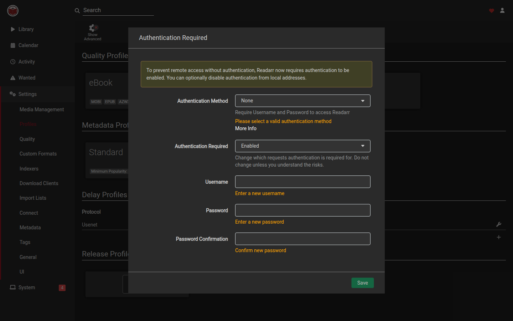

Readarr
Readarr
Wanted formats
A title can exist in your library as an ebook, a PDF, and an audiobook at the same time. Each of those is a separate collected copy. An EPUB does not count as a PDF or an audiobook.
What each box means
| Label in the UI | Satisfied by |
|---|---|
| Ebooks (EPUB, AZW3, MOBI) | EPUB, AZW3, or MOBI. Upgrades still apply inside this group (for example MOBI → EPUB → AZW3). |
| PDFs | A PDF file. |
| Audiobooks | MP3, M4B, or FLAC. Upgrades still apply inside this group. |
Set the default on a quality profile
- Open Settings → Profiles.
- Open a quality profile (or add one).
- Under Wanted Formats, check the copies you want for authors that use this profile.
- Help text: “Collect each selected format independently. An EPUB will not count as a PDF or audiobook. Leave all unchecked to keep the original behaviour where any allowed file completes the book.”
- Save the profile.
Leave every box unchecked if you want the old behaviour: one allowed file completes the book.
Allowed qualities on the same profile still control what Readarr will grab. Check PDFs only if PDF is also allowed in the quality list. Check Audiobooks only if an audio quality is allowed.
Override one book
- Open the book and choose edit.
- Turn on Override wanted formats for this book. Help text: “Use a different set of collected formats than the author's quality profile.”
- Under Wanted Formats, check Ebooks (EPUB, AZW3, MOBI), PDFs, and/or Audiobooks.
- Save. Turn the override off to inherit the author’s profile again.
How missing search behaves
If a profile or book asks for more than one format, Wanted → Missing lists the book until every selected copy is on disk. RSS and search will still grab an audiobook when you already have an EPUB, because those files are different format kinds.
On a fresh instance the default eBook and Spoken profiles have no wanted-format boxes checked, so any allowed file still completes the book until you change that.
